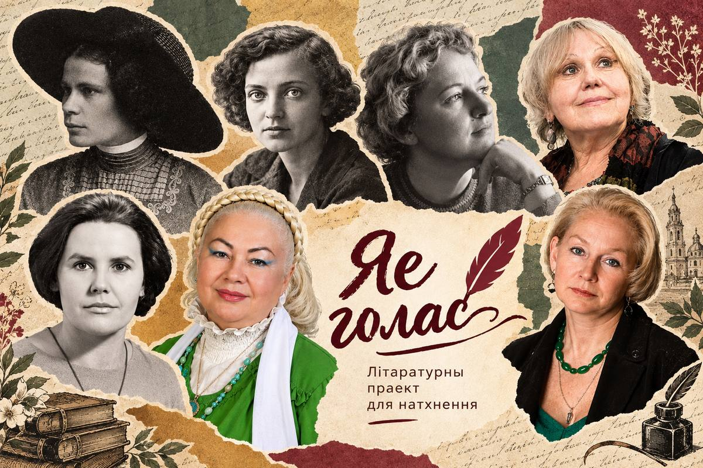

«Цябе і заворвалі, і закопвалі. І ўсё ж нашы продкі праз гора данеслі да нас цябе, родную, цёплую, жывую і непаўторную»— Атрывак з верша Я. Янішчыц «Мова»
Запішыце чытанне «Хрэст на свабоду». Голасам вылучыце паўтор «так і трэба» і растлумачце, як ён ператвараецца ў іронію.
Прыдумайце газетны загаловак, які перадае галоўны заклік верша. Дадайце 2–3 радкі тлумачэння.
Падрыхтуйце маналог ад імя чалавека, які спачатку маўчыць, а пасля вырашае выказацца. Абапірайцеся на вобразы верша.
Стварыце плакат з ключавым радком і сімвалам свабоды. У подпісе растлумачце сувязь з вершам.
Напісаць кароткі ліст Цётцы: расказаць, якой стала Беларусь сёння.
Знайсці яшчэ адзін верш Цёткі, прынесці з кароткім каментарам.
Намаляваць або апісаць вобраз, які ўзнік пры слуханні.
| Крытэрый | 3 балы | 2 балы | 1 бал |
|---|---|---|---|
| Разуменне тэксту | Тлумачыць сэнс, прыводзіць прыклады | Агульнае разуменне | Паверхневыя адказы |
| Сувязь з кантэкстам | Звязвае з біяграфіяй і эпохай | Частковая сувязь | Не звязвае |
| Уласная думка | Выказвае і абгрунтоўвае погляд | Выказвае без абгрунтавання | Паўтарае думкі іншых |
Вызначце, якія рысы беларускай жанчыны раскрываюцца ў «Беларуска». Складзіце партрэт з 5 характарыстык і пацвердзіце іх радкамі.
Падрыхтуйце кароткую прамову ад імя лірычнай гераіні пра годнасць і родную зямлю, выкарыстоўваючы два вобразы верша.
Выберыце ключавое слова верша, зрабіце для яго сімвал і растлумачце, чаму яно перадае галоўную думку.
Напішыце 6 рэплік дыялогу паміж лірычнай гераіняй і сучаснай школьніцай пра родную мову і Радзіму.
Стварыце словесны або візуальны партрэт маладосці паводле «Я маладая...». Уключыце тры вобразы з тэксту.
Напішыце 6–8 сказаў ад імя лірычнай гераіні ў сучаснасці. Захавайце настрой верша, не капіруючы радкі.
Падзяліце верш на часткі і пазначце тэмп, паўзы і вылучэнні. Абгрунтуйце два рашэнні.
Аформіце паштоўку, выбраўшы радок, які перадае радасць маладосці. Дадайце ўласнае пажаданне.
Напішыце кароткі ліст або паведамленне аўтарцы: выкажыце ўражанне, прывядзіце радок і сфармулюйце пытанне.
Правядзіце невялікі пошук, выберыце 2–3 факты і падрыхтуйце кароткае паведамленне для класа.
Стварыце малюнак або калаж паводле верша і дадайце радок-тлумачэнне сваёй задумкі.
Збярыце вобразы «Ночы» і падзяліце іх на спакойныя, трывожныя і светлыя.
Складзіце план гукавога суправаджэння: тры гукі або паўзы. Патлумачце, які вобраз кожны падкрэслівае.
Намалюйце тры кадры: пачатак, сярэдзіна і фінал верша. Пад кожным запішыце адпаведны вобраз.
Напішыце паведамленне ад імя лірычнай гераіні чалавеку, пра якога яна думае. Уключыце два вобразы верша.
Выканайце заданне, абапіраючыся на верш: выберыце ключавы вобраз або радок і растлумачце, як ён раскрывае настрой і асноўную думку.
Выканайце заданне, абапіраючыся на верш: выберыце ключавы вобраз або радок і растлумачце, як ён раскрывае настрой і асноўную думку.
Стварыце малюнак або калаж паводле верша і дадайце радок-тлумачэнне сваёй задумкі.
Перакажыце гісторыю «Ліста» ў форме паведамлення. Уключыце прычыну, чаму яго не ўдаецца перадаць, і фінальную эмоцыю.
Намалюйце маршрут ластаўкі як вестуна. На кожным этапе запішыце, што яна павінна перадаць адрасату.
Складзіце дыялог з 6 рэплік: тры ад лірычнай гераіні і тры ад адрасата. Абапірайцеся на сітуацыю верша.
Знайдзіце паўтор у вершы і прачытайце яго з рознай інтанацыяй. Напішыце, як ён узмацняе чаканне.
Напішыце кароткі ліст або паведамленне аўтарцы: выкажыце ўражанне, прывядзіце радок і сфармулюйце пытанне.
Правядзіце невялікі пошук, выберыце 2–3 факты і падрыхтуйце кароткае паведамленне для класа.
Напішыце кароткі ліст або паведамленне аўтарцы: выкажыце ўражанне, прывядзіце радок і сфармулюйце пытанне.
Падрыхтуйце групавое чытанне: размеркуйце радкі паміж удзельнікамі і вызначце, дзе патрэбны хор.
Стварыце схему каштоўнасцяў і рашэнняў, якія гучаць у вершы. Кожную стрэлку падмацуйце радком.
Напішыце 4–6 радкоў сучаснай прысягі роднай мове або культуры, перадаючы энергію верша.
Зрабіце плакат для сцэнічнага выканання: назва, сімвал і ключавы радок. Растлумачце выбар.
Напішыце кароткі ліст або паведамленне аўтарцы: выкажыце ўражанне, прывядзіце радок і сфармулюйце пытанне.
Напішыце кароткі ліст або паведамленне аўтарцы: выкажыце ўражанне, прывядзіце радок і сфармулюйце пытанне.
Стварыце малюнак або калаж паводле верша і дадайце радок-тлумачэнне сваёй задумкі.
Выпішыце вобразы ночы і зорак з «Ночкаю зоры...». Зрабіце карту, дзе кожная зорка — вобраз або пачуццё.
Прачытайце верш, перадаючы пераход ад цішыні да руху. Пазначце паўзы і растлумачце іх.
Стварыце два малюнкі пейзажу з верша. Параўнайце, як змяняюцца настрой і надзея.
Напішыце 4–6 сказаў ад імя зоркі, якая назірае за пейзажам. Уключыце два вобразы з тэксту.
Напішыце кароткі ліст або паведамленне аўтарцы: выкажыце ўражанне, прывядзіце радок і сфармулюйце пытанне.
Выканайце заданне, абапіраючыся на верш: выберыце ключавы вобраз або радок і растлумачце, як ён раскрывае настрой і асноўную думку.
Выканайце заданне, абапіраючыся на верш: выберыце ключавы вобраз або радок і растлумачце, як ён раскрывае настрой і асноўную думку.
Знайдзіце два супрацьпастаўленыя вобразы ў вершы. Складзіце табліцу «ноч / дзень» і растлумачце, як яны раскрываюць надзею.
Намалюйце «пялёстак кволы» і «бязлітасны дзень». Дадайце 3–4 сказы пра сэнс супрацьпастаўлення.
Напішыце 5–7 сказаў на тэму «Ці патрэбна чуласць у вялікім свеце?», абапіраючыся на верш.
Падрыхтуйце невялікую сцэнку, у якой адзін голас перадае кволасць, а другі — сілу дня. Завяршыце радком з верша.
Напішыце кароткі ліст або паведамленне аўтарцы: выкажыце ўражанне, прывядзіце радок і сфармулюйце пытанне.
Правядзіце невялікі пошук, выберыце 2–3 факты і падрыхтуйце кароткае паведамленне для класа.
Стварыце малюнак або калаж паводле верша і дадайце радок-тлумачэнне сваёй задумкі.
Знайдзіце ў вершы «Мова» тры вобразы, якія раскрываюць значэнне роднага слова. Для кожнага запішыце кароткае тлумачэнне.
Стварыце абкладынку «Мова»: назва, колер і сімвал. У подпісе растлумачце, як дызайн адлюстроўвае думку верша.
Напішыце 5–7 сказаў ад імя роднай мовы, выкарыстоўваючы настрой і адзін вобраз з верша.
Пазначце ў вершы словы, якія трэба вылучыць голасам. Запішыце чытанне і растлумачце свае інтанацыйныя рашэнні.
Напішыце кароткі ліст або паведамленне аўтарцы: выкажыце ўражанне, прывядзіце радок і сфармулюйце пытанне.
Выканайце заданне, абапіраючыся на верш: выберыце ключавы вобраз або радок і растлумачце, як ён раскрывае настрой і асноўную думку.
Выканайце заданне, абапіраючыся на верш: выберыце ключавы вобраз або радок і растлумачце, як ён раскрывае настрой і асноўную думку.
Намалюйце шар, на якім знаходзіцца лірычная гераіня. Дадайце 3 дэталі, якія перадаюць яе настрой, і растлумачце іх.
Напішыце маналог ад імя дзяўчынкі на шары: 6–8 сказаў пра тое, што яна бачыць і адчувае.
Складзіце маршрут з 4 пунктаў: ад зямлі да шара і назад. Кожны пункт звяжыце з вобразам або думкай верша.
Стварыце паштоўку з вышыні шара. Выберыце адзін радок, які стане подпісам, і растлумачце выбар.
Напішыце кароткі ліст або паведамленне аўтарцы: выкажыце ўражанне, прывядзіце радок і сфармулюйце пытанне.
Выканайце заданне, абапіраючыся на верш: выберыце ключавы вобраз або радок і растлумачце, як ён раскрывае настрой і асноўную думку.
Стварыце малюнак або калаж паводле верша і дадайце радок-тлумачэнне сваёй задумкі.
Запішыце 5 беларускіх слоў, якія часта гучаць у вашай сям’і. Выберыце адно і растлумачце, чаму яно вам роднае.
Стварыце малюнак да «Роднае слова», выкарыстоўваючы адзін вобраз з верша. Дадайце подпіс з уласным тлумачэннем.
Прачытайце верш разам з членам сям’і або сябрам. Параўнайце, якія радкі кожнаму здаюцца найбольш важнымі.
Напішыце кароткі ліст роднаму слову: падзякуйце за тое, што яно захоўвае, і прывядзіце адзін радок з верша.
Напішыце кароткі ліст або паведамленне аўтарцы: выкажыце ўражанне, прывядзіце радок і сфармулюйце пытанне.
Выканайце заданне, абапіраючыся на верш: выберыце ключавы вобраз або радок і растлумачце, як ён раскрывае настрой і асноўную думку.
Стварыце малюнак або калаж паводле верша і дадайце радок-тлумачэнне сваёй задумкі.
Вызначце, якія гістарычныя або культурныя вобразы прысутнічаюць у «Шляхта». Складзіце 3 пытанні для абмеркавання.
Збярыце ключавыя словы верша ў карту: цэнтр — галоўная тэма, вакол — вобразы і асацыяцыі.
Падзяліце верш на голас апавядальніка і голас героя. Падрыхтуйце чытанне з рознымі інтанацыямі.
Напішыце 7–9 сказаў: як літаратура дапамагае ўбачыць гісторыю і культурную памяць? Прывядзіце прыклад з верша.
Напішыце кароткі ліст або паведамленне аўтарцы: выкажыце ўражанне, прывядзіце радок і сфармулюйце пытанне.
Выканайце заданне, абапіраючыся на верш: выберыце ключавы вобраз або радок і растлумачце, як ён раскрывае настрой і асноўную думку.
Выканайце заданне, абапіраючыся на верш: выберыце ключавы вобраз або радок і растлумачце, як ён раскрывае настрой і асноўную думку.
Матэрыялы па кожнай аўтарцы: план урока і гатовы рабочы ліст для вучняў.
13 планаў урокаў · Фармат А4 (docx) · 45 хвілін. Мэты, этапы заняткаў, пытанні да тэксту, творчыя заданні, рэфлексія і крытэрыі ацэнкі. Кожны план распрацаваны з улікам канкрэтнага верша.
Рабочыя лісты для кожнай аўтаркі: заданні на разуменне верша, аналіз вобразаў, выразнае чытанне і творчы адказ. Вучань можа запаўняць іх на ўроку або самастойна.
Праект «Яе голас» — агульнадаступная аудыябібліятэка твораў 13 беларускіх паэтэс і пісьменніц ад Цёткі да нашых дзён. Кожны трэк — жывы голас маладога чалавека, які чытае ўслых тое, што было напісана дзесяцігоддзі таму. Кожная картка — гатовы інструмент для настаўніка. Кожны QR-код — мост паміж пакаленнямі.